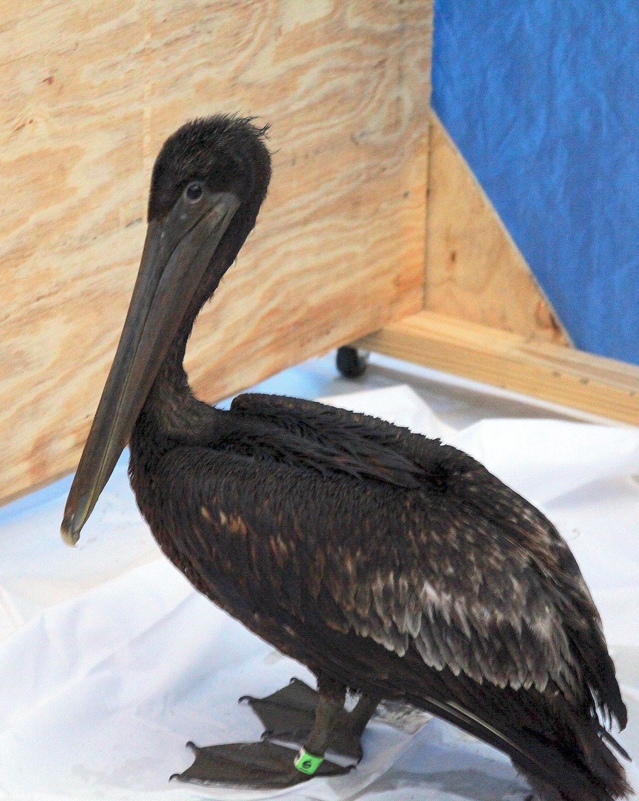

Задача трёх тел · глава 27 из 35
Эванс

Кратко
Выбирая место для радиообсерватории на северо-западе Китая, Е Вэньцзе знакомится с Майком Эвансом, сыном американского нефтяного магната. Пережив в юности разлив нефти, убивший тысячи птиц, он проповедует «всевидовой коммунизм»: все виды равны, и человек не вправе уничтожать другие. Эванс в одиночку сажает лес, чтобы спасти исчезающих птиц. Годы спустя Е находит его лес вырубленным, хотя Эванс получил наследство в 4,5 миллиарда долларов. Е рассказывает ему о «Красном береге» и Трисолярисе; Эванс обещает всё проверить — и становится её соратником.
Главные моменты
- Всевидовой коммунизм — идеология, ставящая человека в один ряд с птицами.
- Лес Эванса вырублен: человечество снова губит природу.
- Е открывает Эвансу тайну — и обретает союзника с миллиардами.
Значение
Значение главы может забегать вперёд — показать
Рождается ОЗТ. Эванс — второй полюс организации: если Е надеется, что Трисолярис исправит людей, то Эванс в глубине души хочет, чтобы людей не стало.